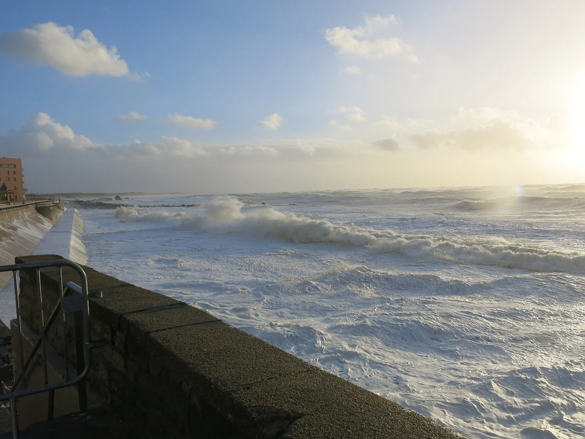

Le Prévent — Capbreton
Landes, France · surf

Plage de Capbreton au sud de la jetée, entre deux épis rocheux, près des anciens blockhaus. Beach break : quand la grosse houle d’hiver dépasse les plages du nord ou que le vent du sud abîme les spots voisins, c’est une solution de repli. Les vagues y sont en général plus petites et plus douces, avec des bancs de sable parfois bien formés.
- Lieu
- Landes, France
- Niveau
- Variable selon les conditions
- Activités
- surf
- Type d'eau
- Mer / océan
- Coordonnées
- 43.65, -1.45 (position approximative du secteur)
Dangers à connaître
- Épis rocheux de chaque côté de la plage : garde tes distances avec les pierres.
- Surveillance de la plage du 4 juillet au 30 août environ (Tourisme Landes), avec un poste partagé avec les plages voisines : hors saison, personne ne surveille.
- Baïnes et courants possibles sur la côte landaise : repère-les depuis la plage.
Le conseil d'Ocean Buddy
Regarde la mer un moment : la marée change beaucoup la façon dont la houle entre autour de la jetée. Mets-toi à l’eau dans la zone surveillée quand le poste est ouvert.
Ouvrir dans Ocean Buddy Télécharger sur l'App Store
Source : Fiche Ocean Buddy · octobre 2026 · d’après Tourisme Landes (Plage du Prévent), Landes Holidays et Quiksilver (webcam du Prévent) · à vérifier localement.